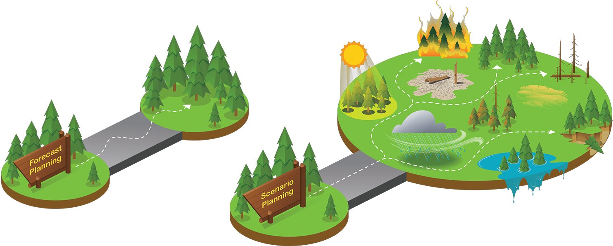
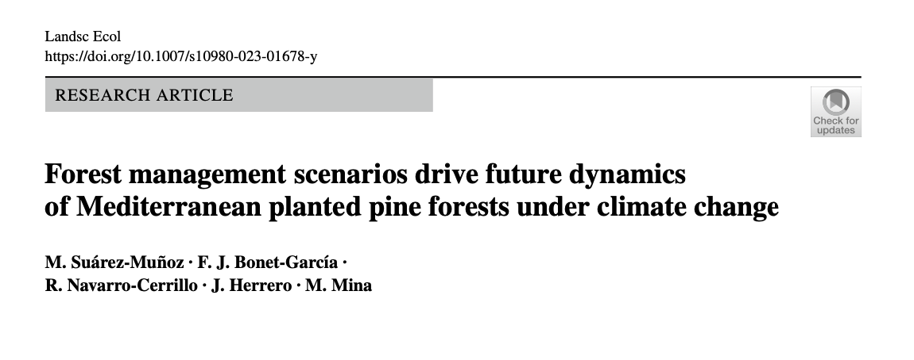
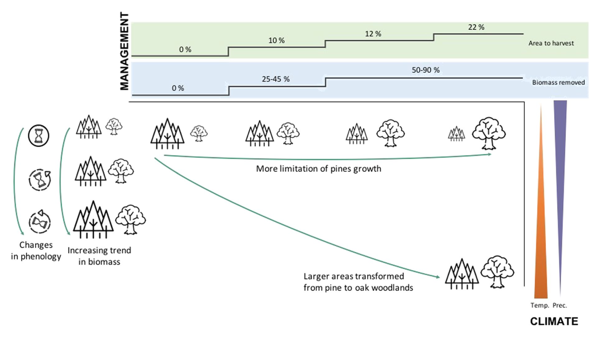
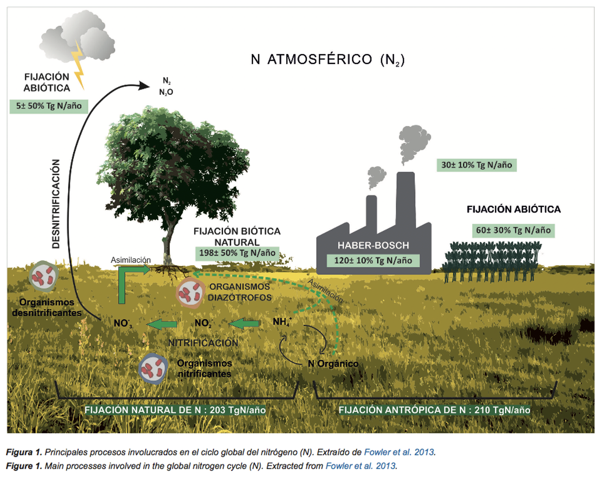
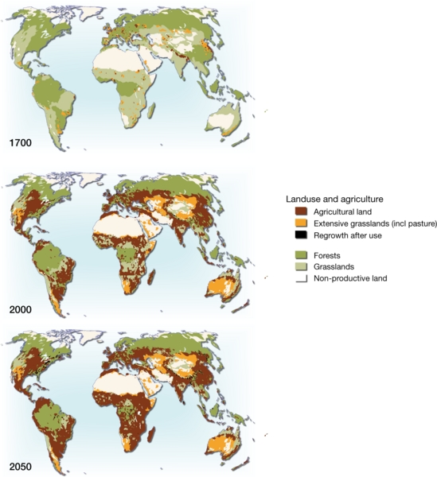
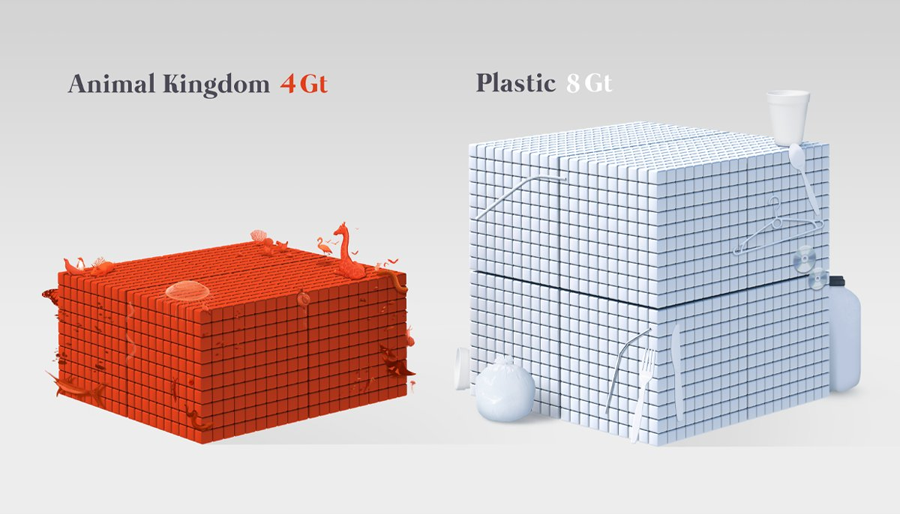
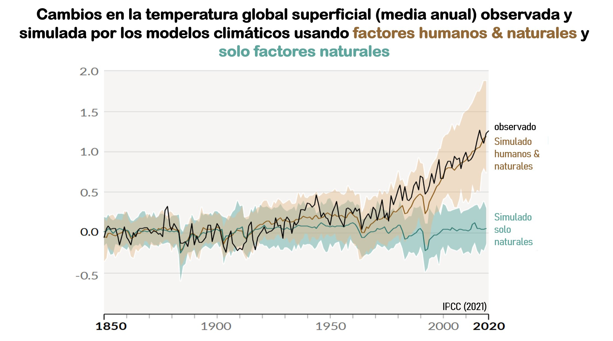
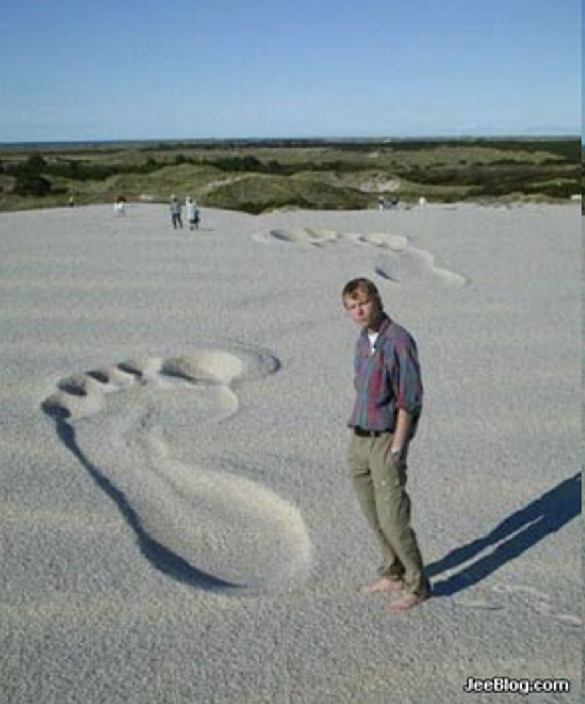

- Cambio global: bienvenidos al Antropoceno
- La actividad humana ya no solo tiene consecuencias a escala local. También a escala global.
- Aumento exponencial de la actividad humana desde el invento de la máquina de vapor
- Consecuencias globales
- Consecuencias locales
- Gestionar (Socio)ecosistemas a escala local requiere tener en cuenta los cambios globales.
- La evolución de un socioecosistema dado ya no depende únicamente de lo que ocurra en ellos. También depende del efecto del cambio global.
- Ejemplos
-
- 
-
- 
- 
-
- Cambio global
- Definición formal
-
- El cambio está ocurriendo rápidamente (en los últimos 200 años)
- No lo provoca un agente externo, sino una especie del planeta.
-
- Motores del cambio global
- Alteraciones de los ciclos biogeoquímicos.
- Nitrógeno
- 
-
- Deposición de nitrógeno
- Eutrofización
-
- Uso de agua
- Cambios de uso del suelo
-
- 
-
- 
-
- Cambio en el clima
- 
- Amenaza sobre la biodiversidad (especies invasoras y otros)
- Estamos simplificando los sistemas naturales
- Por qué esto es importante
- Dónde se producen las extinciones
- Esto nos lleva al concepto de Antropoceno
- 
-
- Aumento de la intensidad de nuestra influencia en el medio: cambio global
- Aumento de nuestro nivel de conciencia como especie.